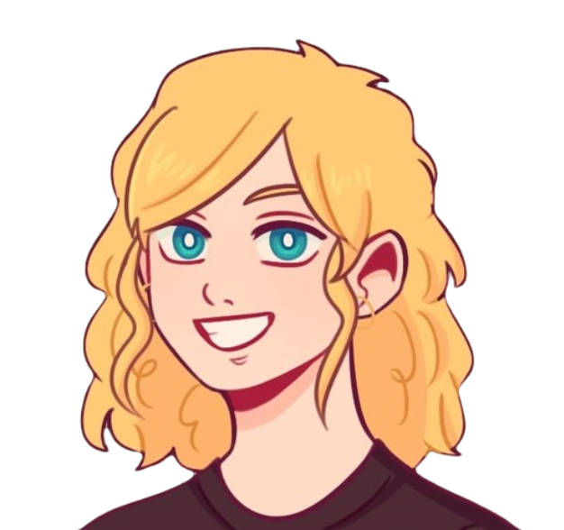
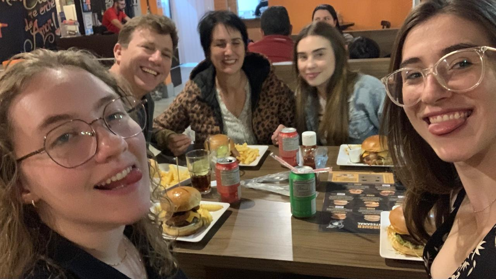
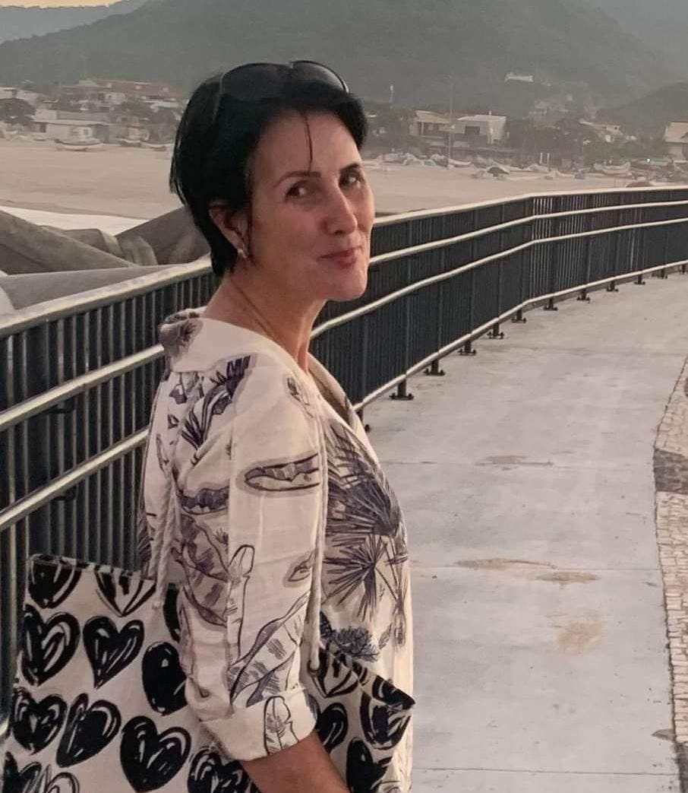
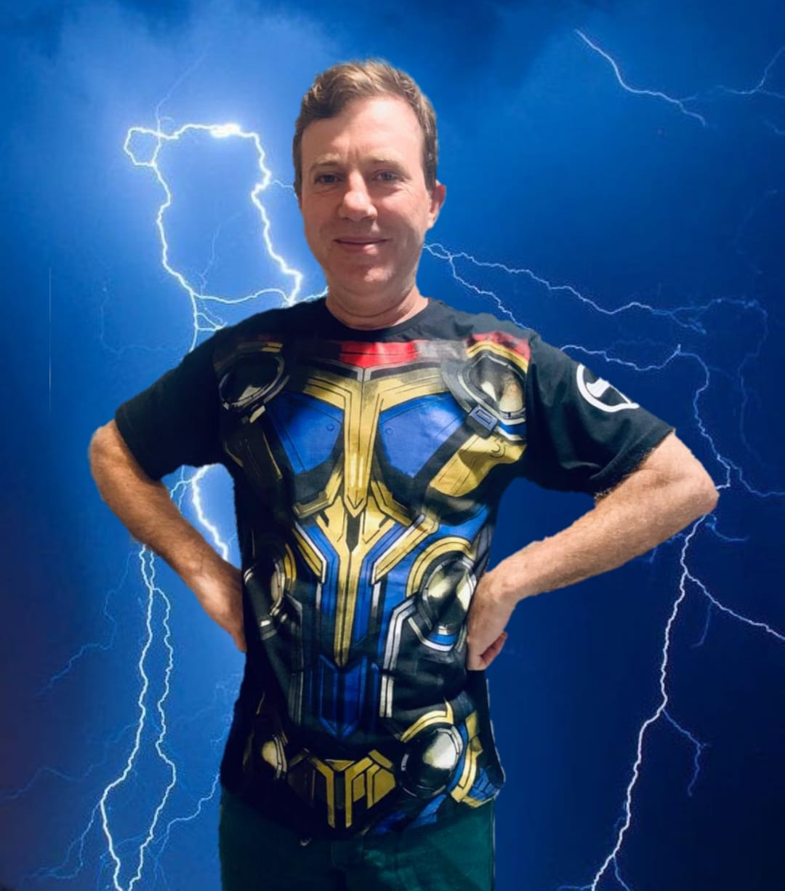
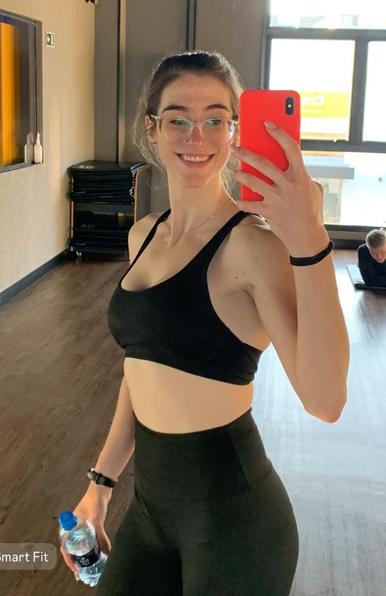
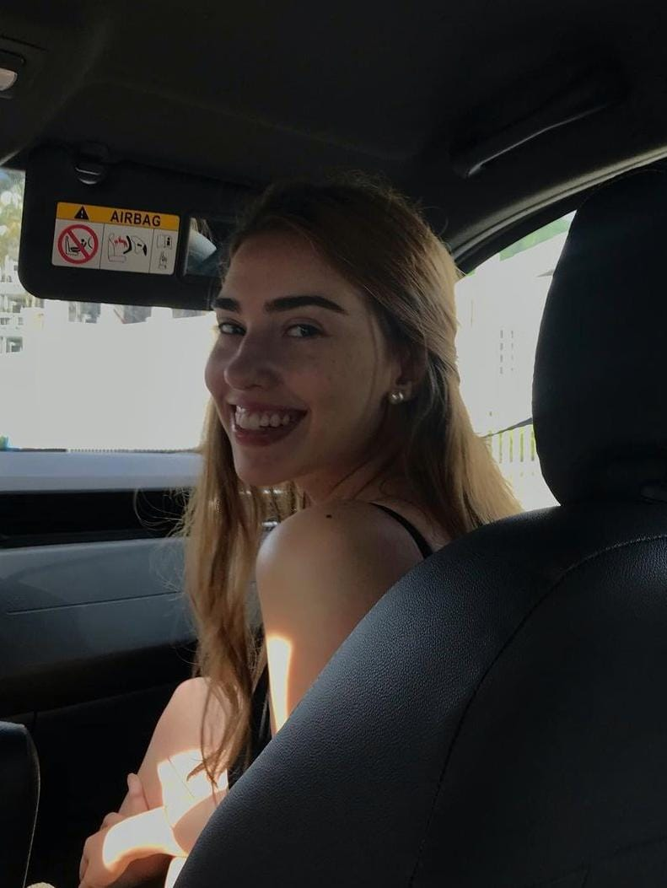
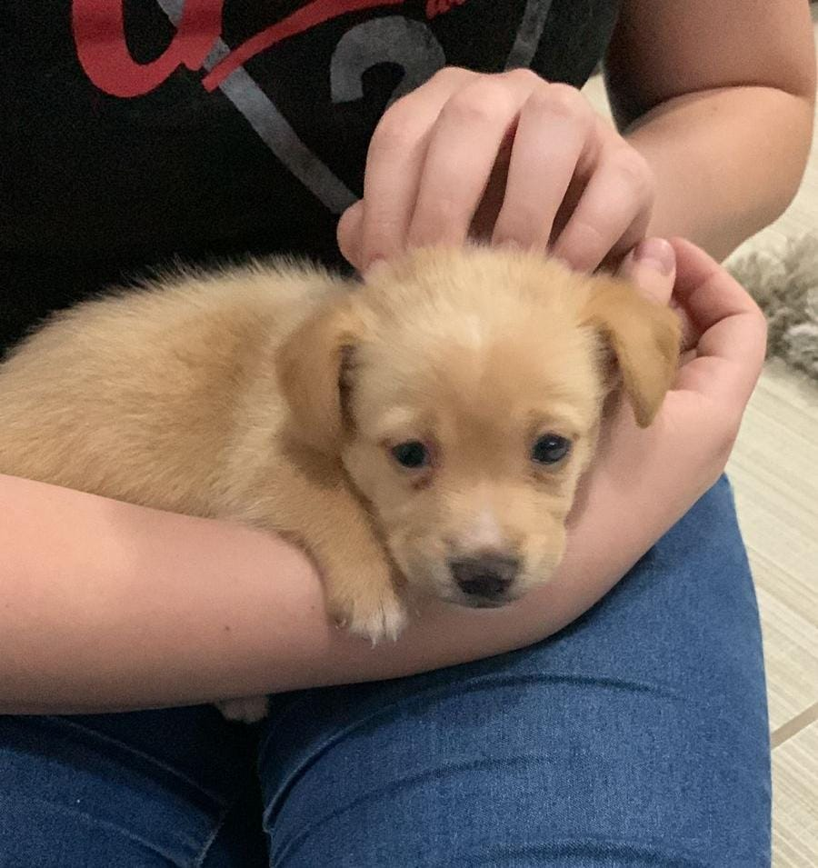
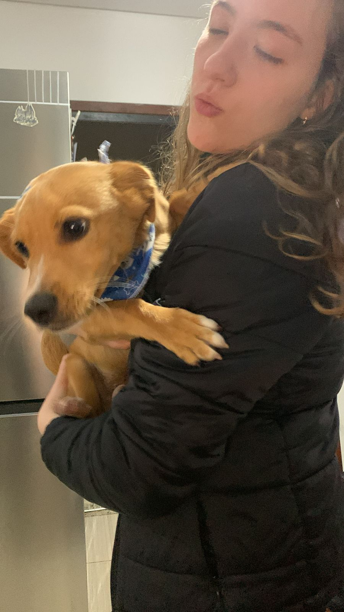
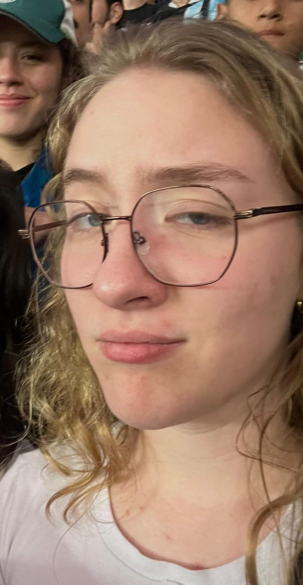
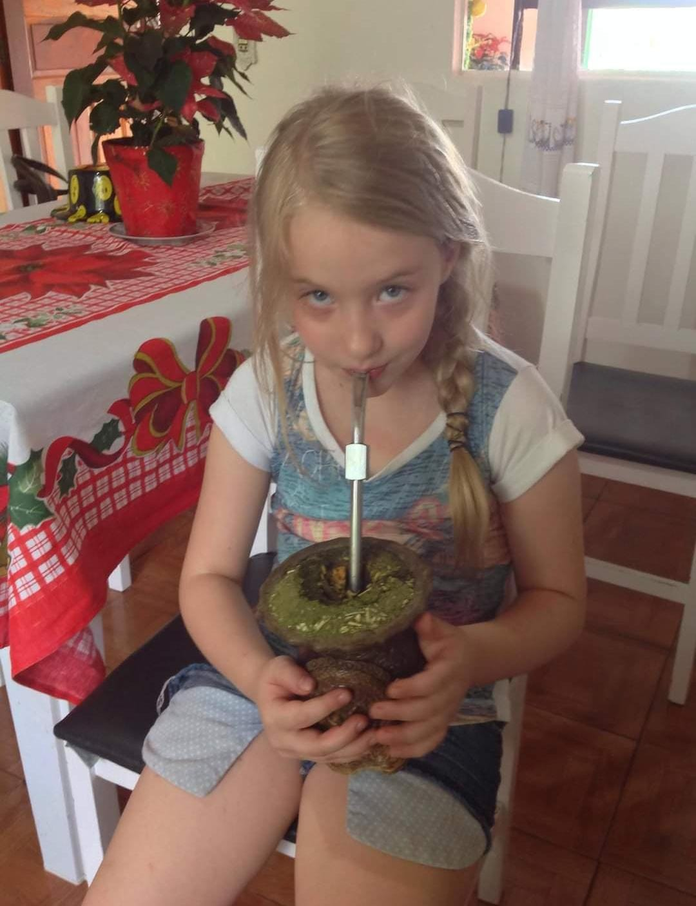

Helenis


Salete Adriani Picinin de Lima
, nascida em 13 de Outubro de 1971 na cidade de São Jorge do Oeste e crescida em Pato Branco. Mulher guerreira, Mãe, Presidente das moças na igreja, Professora, Ex-Missionária, Pioneira e Fofa.

Edevaldo Borges de Lima
, nascido em 18 de Fevereiro de 1972 na cidade de Curitiba. Homem trabalhador, o mais inteligente da América, Dedicado, Sobrevivente, Pai de Família e Amoroso.

Marina Picinin de Lima
, nascida em 20 de Junho de 2001 na cidade de Curitiba. Primeiro fruto de uma união, Maromba, Inteligentuda demais, Miope e Carinhosa.

Letícia Picinin de Lima
, nascida em 26 de Março de 2003 na cidade de Curitiba. A filha do meio, Vaidosa, Animada, Terror dos boys, Aventureira.
 
Paçoca de Lima
, nascido em 15 de Fevereiro de 2024 na cidade de Curitiba. Fedido, Cão guarda desde pequeno, Pula muito alto, Come muitooo e o segundo homem mais lindo do mundo.
Mais sobre Helena


Intereses
Favoritos